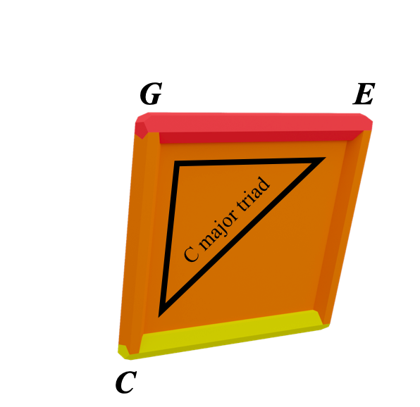

GEOMETRY:
So far we've got three primary coloured squares
and they join in pairs to make secondary colour cubes
Yellow + red = orange
We can make three alpha cubes, one for each secondary colour:
Yellow + red = orange
Blue + yellow = green
Red + blue = purple
Speaking of detail, let's talk about the note structure of the alpha cubes
We know that the primary squares represent cycles of minor 3rds
In the alpha cubes they are joined by perfect 5th intervals:
What we have here is the orange line representing the perfect 5th interval between C (yellow) and G (red)
They are always connecting two primary colour notes
Ok, so all four orange lines in the orange alpha cube are perfect 5ths:
Take a moment to identify the four 5ths here:
C and G
A and E
Gb and Db
Eb and Bb
But theres just one more thing I want to touch on here:

Let's look at this one at the front,
It holds the notes C, E, G and A
This gives us the notes of a C major triad:
And C major's relative minor, an A minor triad:
C maj and A min share the same orange face,
This is part of why we can say "orange chords share function"
Check out the page on functional equivalence for more on this:
Functional Equivalenceand that there are four orange squares in the alpha cube:
This gives us the cycles of orange major and minor chords that we discussed in the secondary colours page:
Secondary ColoursWhen we move a chord by a minor 3rd, we move 90 degrees around the alpha cube
When we move a a chord by a tritone, we move 180 degrees around the alpha cube
Scroll back up and look at the chart above and just really process the minor 3rd colour relationships going on
Ok so what are we going to do with these cubes?
Continue on to hypercubes
Back to Squares | Continue to Hypercubes